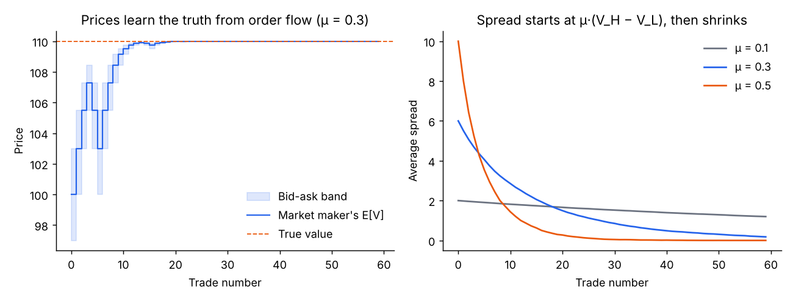
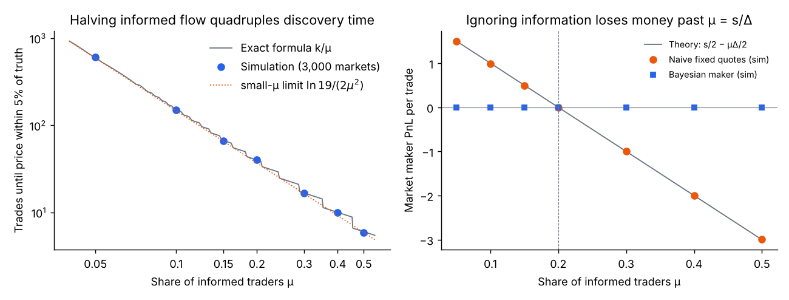
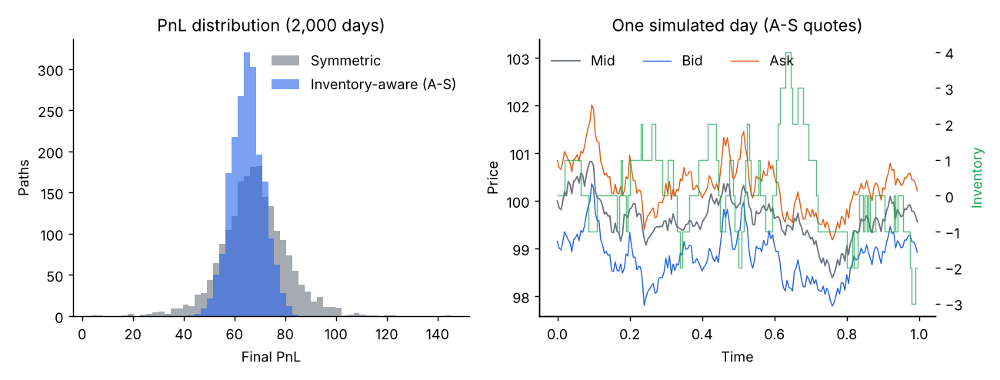
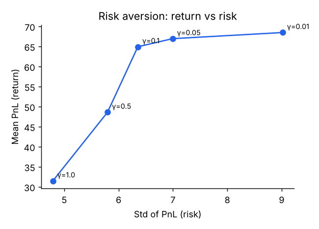
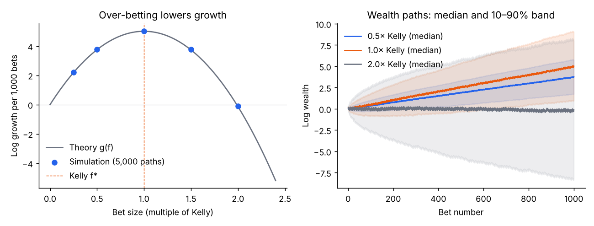
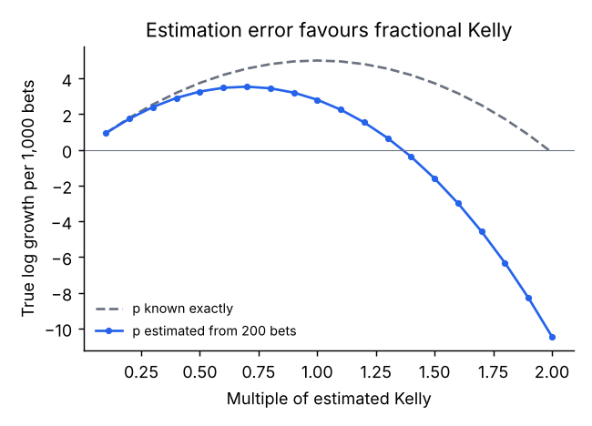
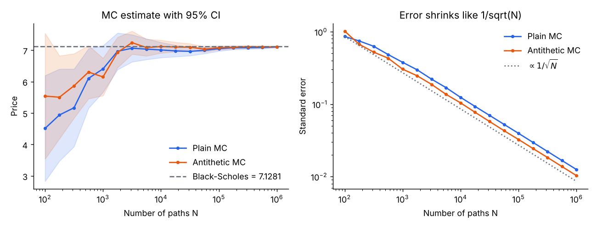

quant-sim · four studies
Each study below runs live in your browser. Move a slider and the model re-simulates thousands of markets, bets or option paths.
Undergraduate, Akita University · Python, NumPy, SciPy · Korean, Japanese, English
Theory vs simulation
| Check | Theory | Simulation |
|---|---|---|
| Opening spread when 30% of traders are informedGlosten–Milgrom, μ·(VH−VL) | 6.000 | 6.000 |
| Trades until the price is within 5% of the truthGlosten–Milgrom, μ = 0.3, exact k/μ | 16.67 | 16.71 ± 0.23 |
| Fixed-quote market maker, PnL per tradeμ = 0.3, spread 4, s/2 − μΔ/2 | −1.000 | −1.002 |
| Chance half Kelly ever halves wealthKelly, 0.5(2/c−1) with c = ½ | 12.5% | 11.9% |
| Best stake when the edge is estimated from 200 betsKelly, bias–variance optimum | 0.67× | 0.7× |
| Monte Carlo error vs number of pathslog–log slope, theory 1/√N | −0.50 | −0.48 |
| European call, S = 100, K = 105, σ = 20%, 1 yearBlack–Scholes vs 10⁶ paths, 95% CI | 7.1281 | 7.1230 ± 0.0245 |
Market making · information
Some traders already know what the asset is worth. Glosten and Milgrom (1985) showed that a competitive market maker must quote the expected value given that the next trade is a buy (the ask) or a sell (the bid). The gap between the two is the price of trading against people who may know more.
I simulated the model and derived how fast prices learn. Each buy multiplies the odds on the high value by exactly (1+μ)/(1−μ), so the log-odds is a biased random walk and the expected number of trades to discover the truth is an exact k/μ.
Market making · inventory
The second reason for a spread is inventory risk. Avellaneda and Stoikov (2008) centre both quotes on a reservation price, S − q·γ·σ²·(T−t), so a market maker that is long shades its quotes down to sell more and buy less.
Both strategies below see the same prices and the same order flow (common random numbers), so the difference comes from the quoting rule alone. At γ = 0.1 the inventory-aware maker gives up 4% of mean profit and halves the volatility of its PnL.
Slider is log-scaled from 0.01 to 1. Each move simulates 600 trading days per strategy.
Sizing
For an even-money bet won with probability p, staking a fraction f of wealth grows log wealth at g(f) = p·ln(1+f) + (1−p)·ln(1−f). The Kelly fraction f* = 2p − 1 maximises it. Bet twice that and growth falls to about zero: the edge is still real, yet half of all players end up losing.
The practical question is what to do when p is only estimated. With p measured from 200 past bets, the best stake drops to about 0.7× of the estimated Kelly. Near its peak g is quadratic, so the loss splits into a bias term and a variance term, and minimising gives m* = f*² / (f*² + Var(f̂)) = 0.67.
Pricing
A European call priced by simulating the stock under geometric Brownian motion and checked against Black–Scholes. The standard error falls as 1/√N, so a tenfold gain in accuracy costs a hundred times more paths. Pairing every draw z with −z (antithetic variates) cuts the variance by about 1.5× for the same number of payoff evaluations. Expect a draw to miss Black–Scholes by more than 1.96 standard errors about one time in twenty; press “Draw new paths” to see the spread of outcomes.
Reproduce it
The Python package produces every number in the table above from fixed seeds. The models on this page are re-implementations in JavaScript, cross-checked against the Python results by a script in the repository. Source code on GitHub
python scripts/run_all.py # all four experiments → docs/results.json, figures python -m unittest discover tests # 15 tests: textbook values, parity, closed forms node scripts/check_js_models.js # browser models vs Python results






